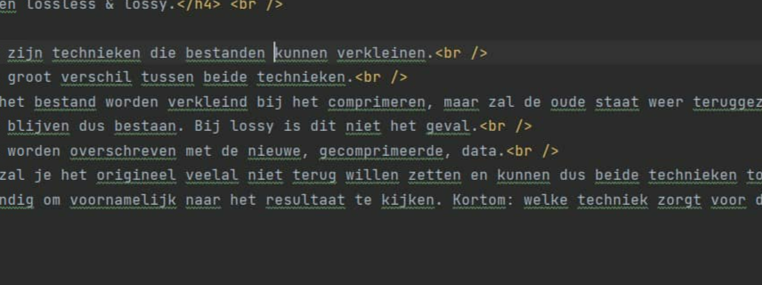
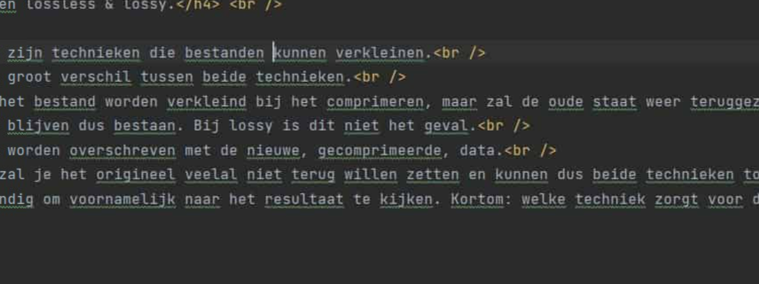

Regenboog
Je ziet dat de kwaliteit sterk vermindert hoe meer je de kwaliteit naar beneden doet.
De kleuren verdonkeren heel lichtjes hoe meer je de kwaliteit naar beneden haalt.
90
70
40
Screen Webstorm
Je ziet geen verschil tussen de 2 foto's
70

40
